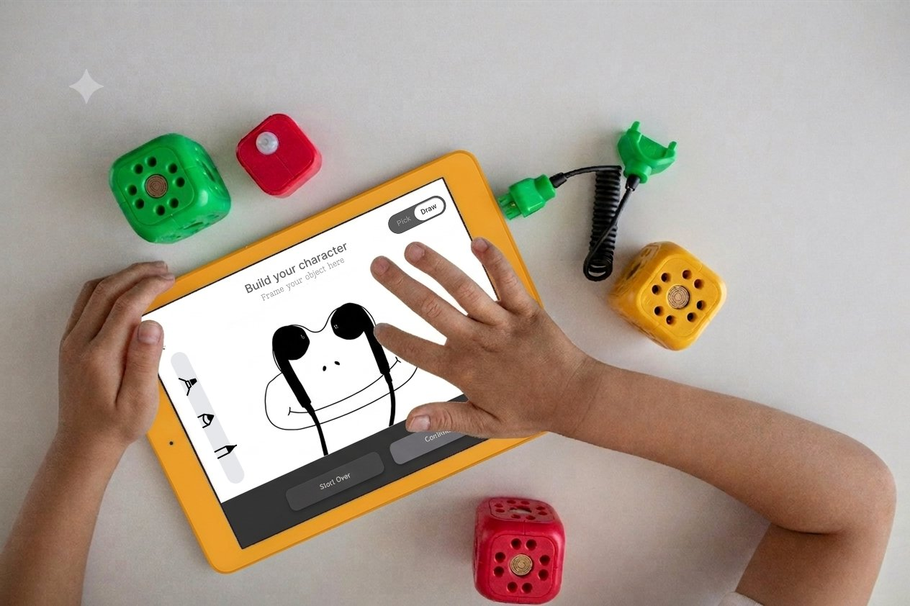
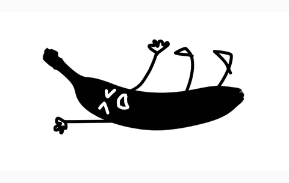
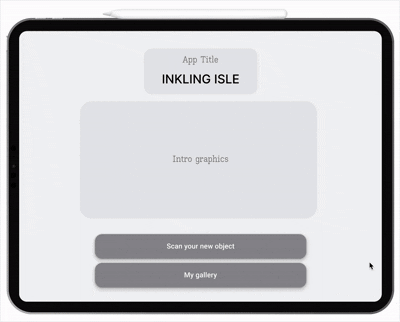
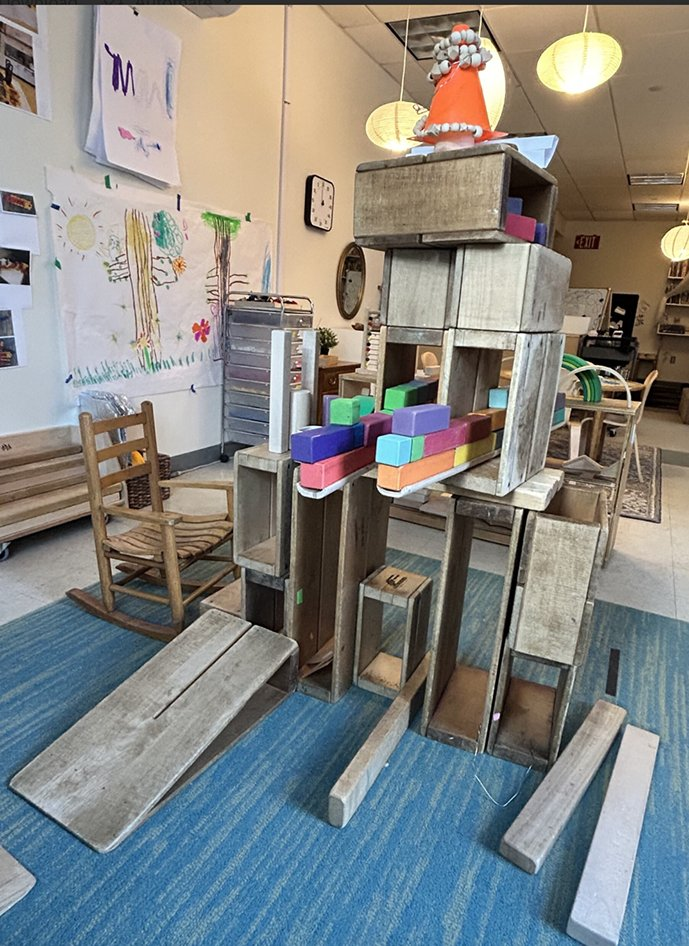
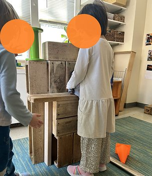
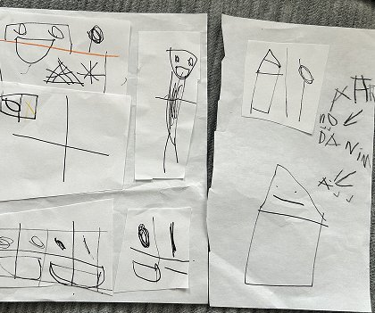
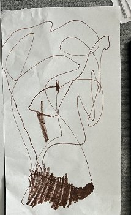
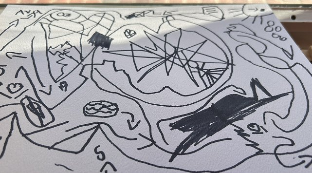

Where familiar objects become imagined characters — and imagination comes home.

Children already turn ordinary things into extraordinary ones — a pencil becomes a rocket, a cardboard box becomes a ship, and they become the sailor. Most children's apps compete for attention with more content. Inkling Isle asked a different question: what if the product didn't compete with that instinct, but built on it? What if the world around a child could become the material for their own stories? That question became Inkling Isle.

Pencil
Doodle
Inkling Isle starts with something already in the child's world.
A child photographs an ordinary object — a spoon, a leaf, a shadow, a cardboard box. The app reduces it to a simplified silhouette: recognizable, but open to interpretation.
What could this become? The child decides — building a character from prepared elements, drawing their own, or both. That character is then placed back into a photo of the child's real environment.
A pencil becomes a rocket. A cardboard box becomes a ship — and they become the sailor.
Find → Transform → Make → Place → Imagine
The screen provides the starting point. The child's environment provides the material. The child's imagination provides the story.

Before Inkling Isle had a name, I spent time volunteering in an early-childhood classroom. I saw children rarely needed much to start imagining.


"Build a trap for a unicorn using blocks." Every child built something different — and had a different story to explain it.


One child drew a house, then a garden, then a lake, then the earth and the solar system — one continuous idea on a single page.

Another child's tangle of lines became a full neighborhood — street names, a friend's house, a plan to get there and back.
Research into symbolic play, agency, and storytelling pointed to the same conclusion: imagination doesn't need more content. It needs room to reinterpret what's already there.
The premise: instead of giving a child a world to enter, could technology help them transform the world they're already in?
Preserve ambiguity
Leave enough unfinished for the child to imagine what comes next.
A simplified shape creates room for interpretation while still keeping a connection to the real world.
Scaffold authorship
Give the child somewhere to begin, not somewhere they have to end.
The experience should help them move from "I picked this" to "I made this."
Return imagination
to the real world
The experience shouldn't end when the screen does.
The goal is for imagination to continue into the child's room, backyard, and everyday surroundings.
Product decisions
The core experience came first. Every product decision was made to protect the child's role as the author.
Authorship over automation
AI could generate characters and stories, but that shifts the child from creator to consumer. The system supplies material; the child supplies meaning.
Private before social
Because children use their physical surroundings as creative material, I kept creation private. Any future sharing would happen within a small circle of known people, not a public feed.
One child before multiplayer
Multiplayer adds turn-taking, moderation, and coordination problems before the core creative loop is proven. I kept the first version focused on one child and one act of imagination.
Imagination over engagement
No maps, streaks, unlocks, or rewards for time spent. The product should make the physical world more interesting—not compete with it.
How I would test this
01 — First, I will test whether the core loop works:
02 — What I would want to learn next:
One spoon, one leaf, one box — the space never changes.
What a child sees in it does.